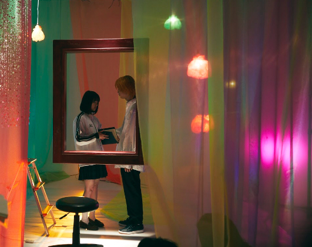
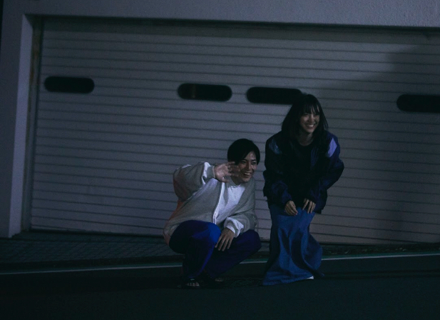
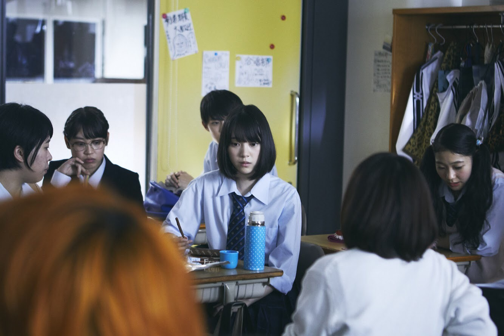
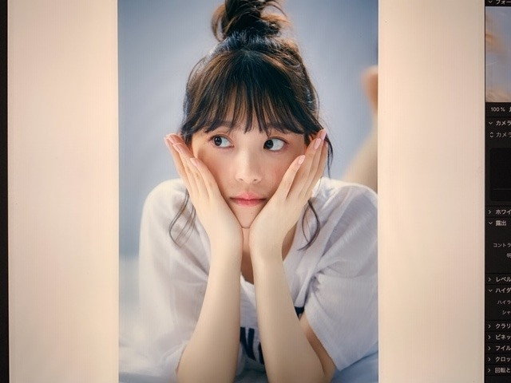
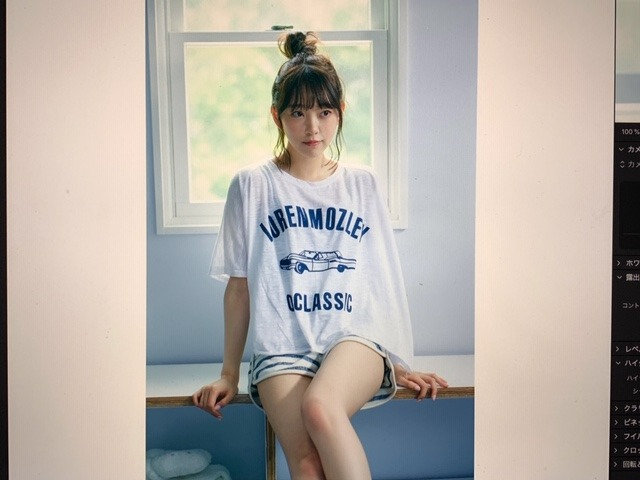
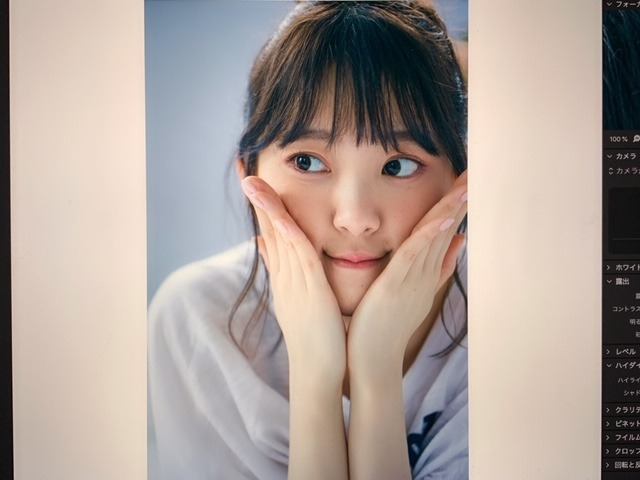
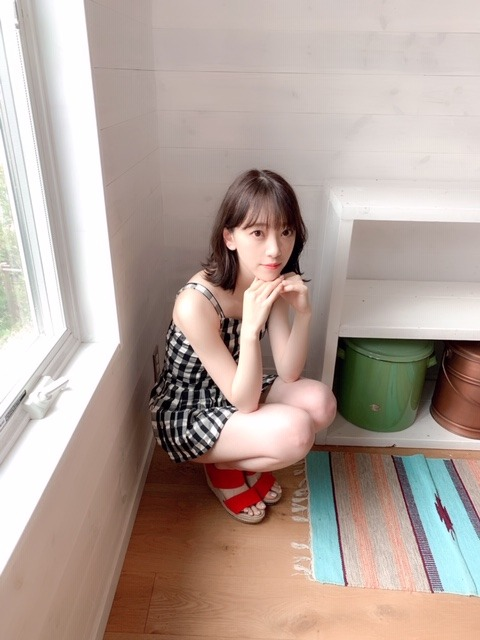

2019/0629Satホットギミックガールミーツボーイ公開中です
ホットギミック ガールミーツボーイ公開中です
早速観てくださった方々、ありがとうございます！
そして今日が私と山戸結希監督の
ラスト舞台挨拶でした
完成披露試写会から始まり、大阪、地元の岐阜、福岡、沖縄、上海、豊洲、横浜、川崎
たくさんの場所に行かせていただき、皆さまの前で
"ホットギミック ガールミーツボーイ"のお話をさせていただけて、たくさんの方が観に来てくださって嬉しい気持ちでいっぱいです。
山戸監督は女の子の気持ちをわかり尽くしている方で、わかり尽くしているのにもっと分かろうとしてくださる強くて優しい方です。
だからこそ山戸監督の撮る映像には女の子の気持ちが溢れているし、そんな女の子に向けたストーリー以上のメッセージも込められています。
溺れるナイフを観た時に、この方の作る作品が好きだ！って直感で思いました。そんな素敵な監督の作品に主演として出させていただけて本当に幸せものでした。
清水さん演じる亮輝、板垣さん演じる梓、間宮さん演じる凌、皆さんそれぞれの魅力が爆発しまくっていてそんなほかの作品では観られないような一面の魅力を引き出せるのも山戸さんならではだなぁと思っています。
めちゃくちゃ三者三様に素敵なので、必見です。
ひよりちゃん演じる茜も、上村さん演じるすばるも、茜とすばるでしかなくて2人には2人の悩みや時間が流れていて素敵でした。撮影中も2人にたくさん救われました。ありがとうございます。良き友です。
現役アイドルではありますが、
そんなガラスはとっくにぶち破ってこの映画に挑みました。全身全霊をかけて、初を演じました。
分からなくても分かりすぎても、とにかく皆さんには新たな青春を感じてほしいです。
楽しさだけではない苦しみから生まれる青いもの。そっちの方がよっぽどキラキラしてるんじゃないかなって思うんです。
なので、是非みなさんの目で、みてください。
#ホットギミック
#ホットギミックガールミーツボーイ
でたくさんの言葉を、感想をSNSに溢れさせてくださったら嬉しいです。
この作品が、よりたくさんの方の胸に届きますように...


青春でした。
初ちゃん、ありがとう。一緒に頑張ろうね。大好きです。
2019/0629Sat短いブログです
今日は19:00〜
99人の壁に出させていただきます！
皆さんの奮闘を見守りながら、まったり話しています。

この日の衣装は私が一番好きな色
くすみブルー尽くしでした！


わーい☺︎
見てください！
そして質問募集します✨
人は月日が経てば色々と変わるものなのでね。
なんでもどーぞです。
では
2019/0627Thu青くあってほしいと
かとうれいさんのイラストが昔からだいすき
青春の爽やかさ、甘酸っぱさが繊細に描かれていてずっとみてられます。
とある商品のラベルのイラストが素敵すぎて感動して、
調べてみたらやっぱりかとうれいさんのイラストでした。
わたしは自転車に乗った女の子が自転車に乗った男の子の後ろにいる片思い風イラストを選んだのですが
他のも素敵だったなー

初ちゃんもある意味、初ちゃんらしい青春をしています
恋愛ソングって片思いから両思い、失恋から妄想、憎み恨み、いろんな形のものがあって好きです
朝は爽やかな曲を聴きたくなるし
夜は重めの曲を聴きたくなります
ほぼ毎日聴いてるのはあいみょんさんの"満月の夜なら"とbacknumberさんの"光の街"です
めちゃくちゃ良いです おすすめ
恋愛ってきっとしたら傷つく時もあり楽しいだけではないと思うけど、恋愛で1人の人間として成長していくことって素敵な形だと思うんです
いろんな愛を知って、いろんな自分を知って。
恋愛だけじゃなくても、自分の中で避けていることやあまり言葉や行動にしてこなかったあやふやなことも、その中に自分が前へ進むヒントが隠されているのかなと思います。
明日から全国公開の"ホットギミックガールミーツボーイ"は、恋をしていくことで相手と向き合い自分自身を見つけようともがき前へ進む10代の女の子、男の子の葛藤が描かれています。
私は私を。自分自身を追いかけたいって思っていて
そんな私を受け入れてほしいって心が叫んでいて
前に進みたいって思っていて
私もホットギミック にたくさん救われました。
是非、劇場で、皆さんの目で、耳で、
感じながら観ていただきたいです。
よろしくお願いしますm(_ _)m
どうかたくさんの方に、私の宝物となったこの一本の映画が、気持ちが、届きますように
2019/0625Tuear
発売中のarのオフショット♪


いただいた写真を見たら
目をつむってる写真がほとんどでびっくりしました。笑
表紙の写真、本当お気に入りなんだー！
見てくださいましたか？☺︎
昨日は、お仕事終わりにみり愛と蘭世と焼肉を食べてからまだ食べ足りなくてファミレスに行きました。
昨日は、お仕事終わりにみり愛と蘭世と焼肉を食べてからまだ食べ足りなくてファミレスに行きました。
ずっとずっとずっと話してて、家族みたいで、友達のような、心地のいい存在です。
あ、一昨日はお仕事終わりに絢音とサムギョプサルを食べに行きました。
上海から帰ってきて1番に絢音に会えて嬉しかったなぁ。

誰かが落ち込んでいる時、そっとそばに寄り添いあえる関係って素敵だなと改めて(^-^)
ありがとう☺︎
告知
雑誌
「東海ウォーカー」
「TVガイドAlpha EPISODE U」
「装苑」
「別冊spoon.」表紙
「シネマスクエア」
「seventeen」
「日経エンタテイメント！」
「プチコミック」
「BOMB」
「FINEBOYS」
「+act. （プラスアクト）」
「ar」初表紙
「TV station」
「ベツコミ」
「Maybe」
「EX大衆」表紙
「美的」
「BRODY」
「MYOJO」
「アップトゥボーイ」表紙
「週刊ビックコミック スピリッツ」表紙
「cheese!」
「TV navi」
「OVRETURE」
「TV Bros.」表紙
明日「anan」
TV
6/26 17:55～
「テレ東音楽祭2019」
6/26 18:30～、6/27 18:30〜
「まるっと！ぎふ」
6/28 23:40〜
「ネタパレ」
6/29 8:30〜
「にじいろジーン」
6/29 19:00〜
「99人の壁」

地元、岐阜県
NHK岐阜 のまるっと！ぎふ のロケで久しぶりに帰りましたが空気の匂いも温度も変わってなくて安心しました。
懐かしい場所を回り懐かしい思い出を話し、楽しいロケでした
見てね
では
2019/0623Sunアップトゥボーイ
みてくださいましたか？^-^
表紙やらせていただいています！
中身も25ページと盛りだくさん！！
カメラマンさんはsampeiさん〜
sampeiさんのお写真とても好きです



オフショット

白黒チェックのロンパースに赤のサンダルは
ヨーロッパ感あってステキすぎる衣装でした
夏だなぁ
明日は
「週刊ビッグコミックスピリッツ」表紙
「Cheese!」
「月刊TVnavi」
「OVERTURE」
「TVBros.」表紙
発売日です☺︎
6月は雑誌たくさんで嬉しいです
表紙の雑誌がたくさんな月なんて滅多にないと思うので皆さん是非checkしてくださったら嬉しいです♡
本屋さんへGO〜！
ではは